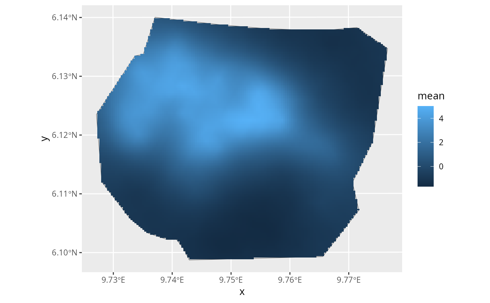

Takes a fitted bru object produced by the function bru() and produces
predictions given a new set of values for the model covariates or the
original values used for the model fit. The predictions can be based on any
R expression that is valid given these values/covariates and the joint
posterior of the estimated random effects.
Arguments
- object
- newdata
A
data.frameorSpatialPointsDataFrameof covariates needed for the prediction.- formula
A formula where the right hand side defines an R expression to evaluate for each generated sample. If
NULL, the latent and hyperparameter states are returned as named list elements. See Details for more information.- n.samples
Integer setting the number of samples to draw in order to calculate the posterior statistics. The default is rather low but provides a quick approximate result.
- seed
Random number generator seed passed on to
inla.posterior.sample- probs
A numeric vector of probabilities with values in
[0, 1], passed tostats::quantile- num.threads
Specification of desired number of threads for parallel computations. Default NULL, leaves it up to INLA. When seed != 0, overridden to "1:1:1"
- used
Either
NULLor abru_used()object. Default,NULL, uses auto-detection of used variables in the formula.- drop
logical; If
drop=FALSE, and the prediction summary has the same number of rows asnewdata, then the output is a joined object. DefaultFALSE.- ...
Additional arguments passed on to
inla.posterior.sample()- include, exclude
![[Deprecated]](figures/lifecycle-deprecated.svg) If auto-detection
of used variables fails, use
If auto-detection
of used variables fails, use usedinstead.
Value
a data.frame, sf, or Spatial* object with predicted mean values
and other summary statistics attached. Non-S4 object outputs have the class
"bru_prediction" added at the front of the class list.
Details
Mean value predictions are accompanied by the standard errors, upper and lower 2.5% quantiles, the median, variance, coefficient of variation as well as the variance and minimum and maximum sample value drawn in course of estimating the statistics.
Internally, this method calls generate.bru() in order to draw samples from
the model.
In addition to the component names (that give the effect of each component
evaluated for the input data), the suffix _latent variable name can be used
to directly access the latent state for a component, and the suffix function
_eval can be used to evaluate a component at other input values than the
expressions defined in the component definition itself, e.g.
field_eval(cbind(x, y)) for a component that was defined with
field(coordinates, ...) (see also bru_comp_eval()).
For "iid" models with mapper = bm_index(n), rnorm() is used to
generate new realisations for indices greater than n, if accessed
via <name>_eval(...).
Examples
# \donttest{
if (bru_safe_inla() &&
requireNamespace("sn", quietly = TRUE) &&
require("ggplot2", quietly = TRUE) &&
bru_safe_terra(quietly = TRUE) &&
require("sf", quietly = TRUE)) {
# Load the Gorilla data
gorillas <- gorillas_sf
# Plot the Gorilla nests, the mesh and the survey boundary
ggplot() +
gg(gorillas$mesh) +
gg(gorillas$nests) +
gg(gorillas$boundary, alpha = 0.1)
# Define SPDE prior
matern <- INLA::inla.spde2.pcmatern(
gorillas$mesh,
prior.sigma = c(0.1, 0.01),
prior.range = c(0.01, 0.01)
)
# Define domain of the LGCP as well as the model components (spatial SPDE
# effect and Intercept)
cmp <- geometry ~ field(geometry, model = matern) + Intercept(1)
# Fit the model, with "eb" instead of full Bayes
fit <- lgcp(
cmp,
data = gorillas$nests,
samplers = gorillas$boundary,
domain = list(geometry = gorillas$mesh),
options = list(control.inla = list(int.strategy = "eb"))
)
# Once we obtain a fitted model the predict function can serve various
# purposes.
# The most basic one is to determine posterior statistics of a univariate
# random variable in the model, e.g. the intercept
icpt <- predict(fit, NULL, ~ c(Intercept = Intercept_latent))
plot(icpt)
# The formula argument can take any expression that is valid within the
# model, for instance a non-linear transformation of a random variable
exp.icpt <- predict(fit, NULL, ~ c(
"Intercept" = Intercept_latent,
"exp(Intercept)" = exp(Intercept_latent)
))
plot(exp.icpt, bar = TRUE)
# The intercept is special in the sense that it does not depend on other
# variables or covariates. However, this is not true for the smooth spatial
# effects 'field'.
# In order to predict 'field' we have to define where (in space) to
# predict.
# For this purpose, the second argument of the predict function can take
# \code{data.frame} objects as well as sf (and legacy sp/Spatial) objects.
# For instance, we might want to predict 'field' at the locations of the
# mesh vertices. Using
vrt <- fmesher::fm_vertices(gorillas$mesh, format = "sf")
# we obtain these vertices as an sf object with POINT geometries
ggplot() +
gg(gorillas$mesh) +
gg(vrt, color = "red")
# Predicting 'field' at these locations works as follows
field <- predict(fit, vrt, ~field)
# Note that just like the input also the output will be a sf object with
# points and that the predicted statistics are simply added as columns
class(field)
head(vrt)
head(field)
# Plotting the mean, for instance, at the mesh node is straight forward
ggplot() +
gg(gorillas$mesh) +
gg(field, aes(color = mean), size = 2)
# However, we are often interested in a spatial field and thus a linear
# interpolation, which can be achieved by using the gg mechanism for meshes
ggplot() +
gg(gorillas$mesh, color = field$mean)
# Alternatively, we can predict the spatial field at a grid of locations,
# e.g. a sf object with a grid of points covering the relevant part of mesh
pxl <- fmesher::fm_pixels(gorillas$mesh,
format = "sf",
mask = gorillas$boundary
)
field2 <- predict(fit, pxl, ~field)
# This will give us a sf with the columns we are looking for
head(field2)
ggplot() +
gg(gorillas$boundary) +
gg(data = field2, geom = "tile")
}

# }